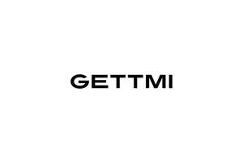

Trade Mark Journal No.2025/027 4 July 2025
UK00004222601 22 June 2025 (35)

- Class 35
- Advertising; business management; business administration; office functions; organisation, operation and supervision of loyalty schemes and incentive schemes; organisation, operation and supervision of sales incentive schemes; on-line administration and supervision of a discount, special offer and gift voucher schemes; organisation, operation and supervision of loyalty and incentive schemes via the internet and mobile devices; loyalty card services; advertising, marketing and promotional services; dissemination of advertising and promotional materials; on-line advertising on a computer network; market research and marketing services; business information; advisory services for business management; computerised file management; compilation, analysis and retrieval of information and data; compilation and systemisation of information into computer databases; compilation and arranging of statistical information; price comparison services; price analysis services; compilation and provision of price, feature and suitability information relating to goods and services; dissemination of statistical information; management of a retail store and or supermarket; rental of advertising space; presentation of goods on communication media, for retail purposes; public relations; commercial information and advice for consumers; sales promotion for others; shop window dressing; distribution of samples; accounting; commercial administration of the licensing of the goods and services of others; employment agencies; payroll preparation; retail and online retail services connected with sunglasses, spectacles, eyewear; retail and online retail services connected with the sale of jewellery; retail and online retail services connected with the sale of travelling bags, umbrellas, parasols, suitcases, bags, leather handbags, attache cases, briefcases, handbags, key cases, wallets, purses, satchels, rucksacks, backpacks, cases, satchels, retail services connected with the sale of textiles, textile piece goods, fabrics, coverings for furniture, labels, linens, bed covers, table covers, bath linen, bed blankets; retail and online retail services connected with the sale of household linen, jersey, lining fabric for shoes, linings, loose covers for furniture, retail and online retail services connected with the sale of clothing, footwear, headgear, menswear, womenswear, childrenswear, dresses; retail and online retail services connected with the sale of jackets, jerseys, jumper dresses, knitwear; retail and online retail services connected with the sale of overcoats, pants, parkas, playsuits, ready-made clothing, bath robes, sandals, saris, sarongs, scarfs, shawls, shirts, shoes, short-sleeve shirts, skirts, slippers, slips, socks, soles for footwear, stocking suspenders, suits, swimsuits, sweaters, t-shirts, tights, togas; retail and online retail services connected with the sale of trousers, underpants, underwear, uniforms, bodysuits, socks, hats, furniture, bedding, furniture fittings; retail and online retail services connected with the sale of cosmetics; the bringing together for the benefit of others, of a variety of perfumery, toiletries and cosmetics, personal care products, jewellery, watches, bags, leather and travel goods, luggage, accessories, sunglasses and eyewear; retail and online retail services connected with the sale of clothing, jewellery, fabrics, clothing, footwear, bags, cosmetics; textiles, furniture, enabling customers to conveniently view and purchase all of the aforesaid goods from an internet website or by any means of telecommunications; provision of information to customers and advice or assistance in the selection of goods brought together as above; model agency services; provision of models; artist management; information, advisory and consultancy services relating to the aforesaid services; but excluding all services relating to preparations for the treatment or prevention of ailments associated with cycling and cleaning products for specialist cycling clothes.
MELONADE MGMT LIMITED